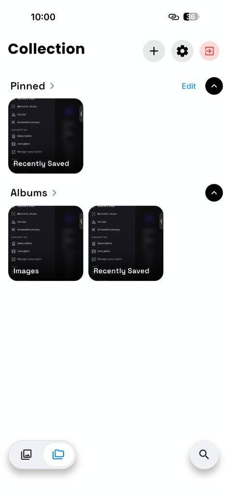
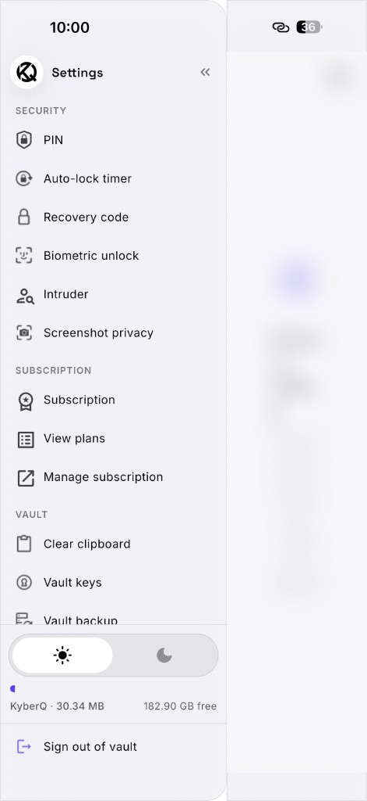
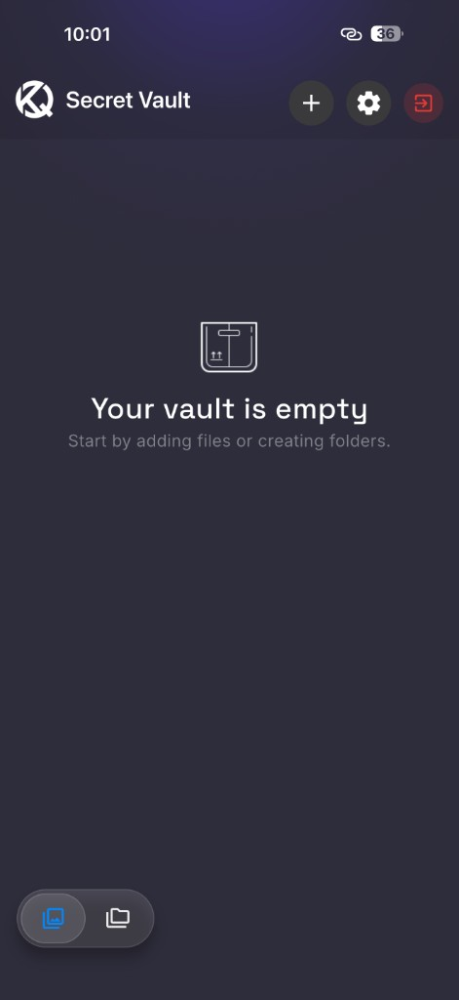
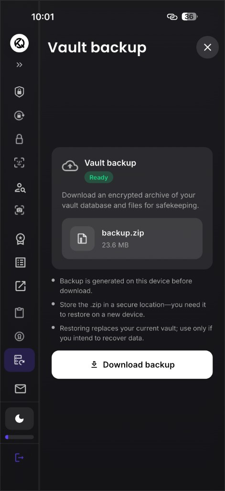
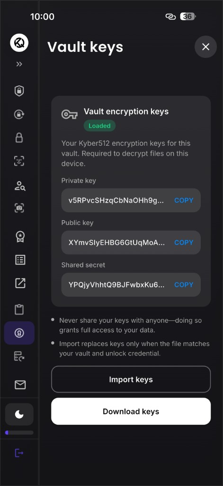
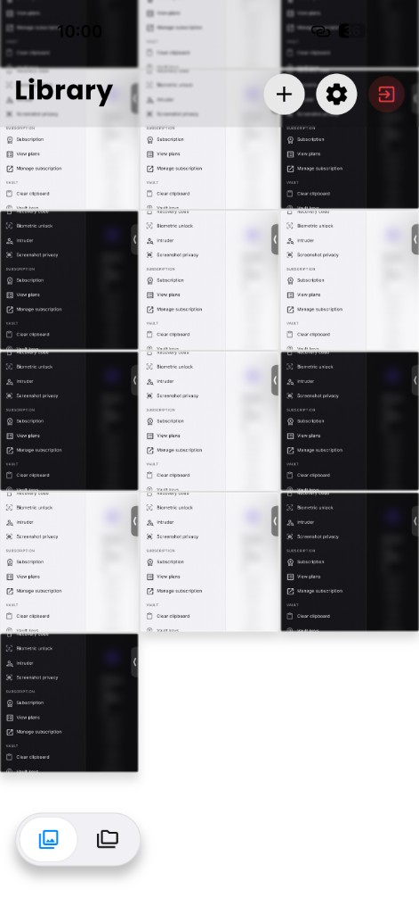

On-Device Encryption
Your encrypted vault never leaves your phone. No cloud account, no server copies — just strong file encryption you control.
KyberQ is the secure photo vault and file encryption app that keeps your private photos, videos, and documents locked on your device — protected by PIN, biometrics, Kyber512 post-quantum encryption, and zero cloud storage.
Available on iOS & Android · Vault data stays on your device · No account required

Why KyberQ?
Most gallery apps upload your files. KyberQ is a local-first secure vault: encrypt photos, hide files, and control every backup yourself.
Your encrypted vault never leaves your phone. No cloud account, no server copies — just strong file encryption you control.
Kyber512 hybrid encryption protects your vault against today's threats and tomorrow's quantum computers.
Password-protect photos and files with a vault PIN, Face ID, Touch ID, or fingerprint unlock.
Hide sensitive content in a separate secret vault with its own credentials — invisible from your main library.
Repeated wrong unlock attempts can trigger an intruder selfie — stored privately on your device only.
Block screenshots inside the vault so private photos and documents cannot be captured from the screen.
App Features
From encrypted albums to vault backups — KyberQ gives you professional-grade privacy tools in one app.
Organize hidden photos, videos, and files into albums. Pin important folders for quick access.

PIN lock, auto-lock timer, recovery code, biometric unlock, intruder alerts, and screenshot blocking.

A hidden second vault for your most private files — separate credentials, separate storage.

Download an encrypted .zip archive of your vault. You choose where to store it — iCloud, Files, or external drive.

View, export, or import your Kyber512 encryption keys. Required to decrypt files on your device.

A clean library view for your encrypted images and documents — fast search, folders, and gallery navigation.
Vault Security
KyberQ uses Kyber512 post-quantum encryption combined with secure platform storage (iOS Keychain / Android Keystore) to protect your vault credentials and encrypted files at rest.
How It Works
Start protecting your private data in minutes. No sign-up, no cloud upload.
Download KyberQ, set a vault PIN and recovery code, and optionally enable biometric unlock for faster access.
Add photos, videos, and documents from your gallery or file picker. KyberQ encrypts them instantly on your device.
Your vault auto-locks for safety. Export an encrypted backup anytime — you control where it is stored.
Use Cases
KyberQ is built for anyone who needs to hide photos, lock documents, and keep personal data off the cloud.
Keep family photos, travel memories, or sensitive images in a password-protected photo locker away from your main gallery.
Encrypt PDFs, contracts, IDs, and financial files on your phone without relying on third-party cloud storage.
Use the secret vault to store content with a second PIN — ideal for extra-private folders and hidden files.
Protect source material and confidential documents with post-quantum encryption and intruder detection.
Lock apps and galleries from curious hands with PIN, biometrics, and screenshot privacy enabled.
Because your vault is local, your encrypted files are available without internet — perfect for travel and offline use.
Searching for a photo vault app, hide photos app, or file encryption app? KyberQ combines the features people want most in a private photo locker: biometric lock, PIN protection, encrypted albums, secret folder, vault backup, and post-quantum encryption — all without uploading your data to our servers.
Unlike basic gallery hiders, KyberQ is a full secure file storage solution. Import from your photo library, organize into collections, encrypt documents, export decrypted files only when you choose, and restore from an encrypted backup on a new device.
KyberQ does not operate a cloud login or remote vault sync. Your email, PIN, recovery code, encryption keys, and encrypted files remain on your phone or tablet. Optional diagnostic logs never include vault contents, passwords, or decrypted data. Read our Privacy Policy for full details.
Get Started
Start with core vault features free. Upgrade to KyberQ Premium for vault backup, advanced tools, and more storage flexibility.
Download on App Store